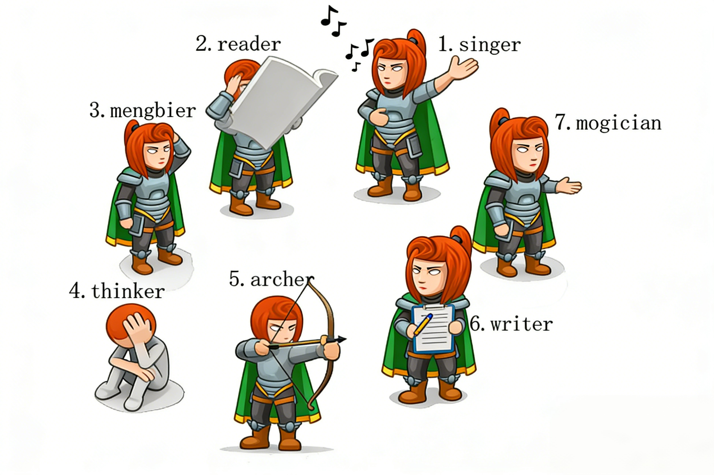

小南的魔法眼镜被一群调皮的玩具小人藏起来了！这些小人围成了一个圈。 每个小人要么面朝圈内 (0)，要么面朝圈外 (1)。
小人们的方向决定了他们口中“左右”的不同含义：

👉 你的任务： 从第 1 个小人出发，根据 m 条“左/右数 s 个”的指令，算出最终停在哪个小人面前。
本题最关键的地方在于理清“朝向”与“指令方向”的组合关系：
| 小人朝向 (dir) | 指令方向 (ai) | 逻辑关系 | 实际移动方向 | 下标操作 |
|---|---|---|---|---|
| 0 (朝内) | 0 (向左) | 相同 | 顺时针 ↺ | 减法 (-) |
| 0 (朝内) | 1 (向右) | 不同 | 逆时针 ↻ | 加法 (+) |
| 1 (朝外) | 0 (向左) | 不同 | 逆时针 ↻ | 加法 (+) |
| 1 (朝外) | 1 (向右) | 相同 | 顺时针 ↺ | 减法 (-) |
✨ 魔法口诀： 只要小人朝向和指令方向相同，就做减法；如果不同，就做加法！
利用结构体存储小人信息，注意处理下标减法产生的负数情况。
#include <iostream> #include <string> #include <vector> using namespace std; // 定义小人结构体：朝向 + 职业名字 struct Toy { int dir; // 0:内, 1:外 string job; // 职业名字 }; int main() { int n, m; cin >> n >> m; // 1. 读入所有小人的信息 vector<Toy> toys(n); for (int i = 0; i < n; i++) { cin >> toys[i].dir >> toys[i].job; } int now = 0; // 当前位置下标 // 2. 执行 m 条指令 for (int i = 0; i < m; i++) { int op_dir, steps; cin >> op_dir >> steps; // 核心逻辑：朝向 == 指令方向 -> 顺时针(减法) if (toys[now].dir == op_dir) { // 为防止负数，先减去步数再加n，最后取模 now = (now - steps % n + n) % n; } else { // 朝向 != 指令方向 -> 逆时针(加法) now = (now + steps) % n; } } // 3. 输出最后停下的职业名字 cout << toys[now].job << endl; return 0; }
利用 Python 自带的负数取模特性，代码非常简洁。
# 1. 读入人数和指令数 n, m = map(int, input().split()) # 2. 读入小人信息 (朝向, 职业) toys = [] for _ in range(n): line = input().split() # 存为元组，提高效率 toys.append((int(line[0]), line[1])) now = 0 # 从第0个小人开始 # 3. 处理 m 条指令 for _ in range(m): op_dir, steps = map(int, input().split()) # 获取当前小人的朝向 current_facing = toys[now][0] # 核心逻辑判断 if current_facing == op_dir: # 朝向与指令相同：减法 # Python的 % 运算符会自动处理负数，非常省心 now = (now - steps) % n else: # 朝向与指令不同：加法 now = (now + steps) % n # 4. 输出最后小人的职业 (在元组下标1的位置) print(toys[now][1])